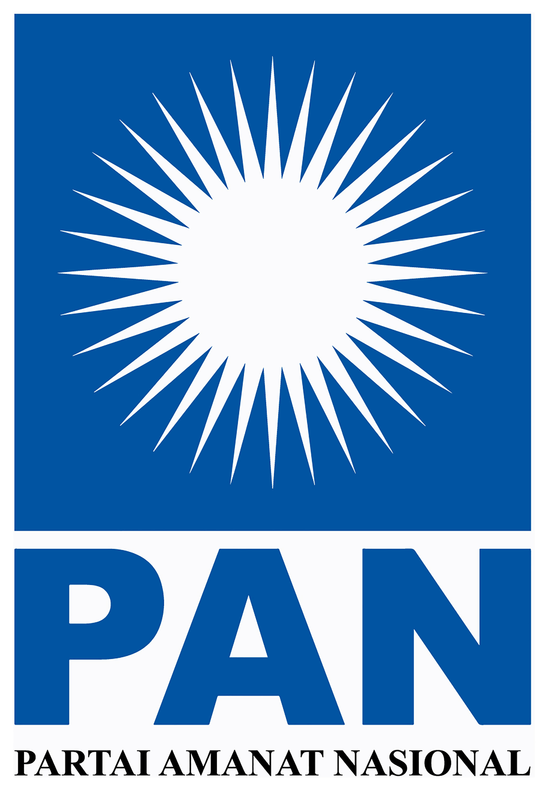

Membangun Masa Depan, Menjaga Amanat Rakyat
Partai Amanat Nasional berkomitmen untuk menghadirkan perubahan nyata melalui kebijakan yang berpihak pada rakyat, memperjuangkan keadilan sosial, dan mewujudkan Indonesia yang lebih sejahtera dan bermartabat.

Kebijakan Pro-Rakyat
Fokus pada penguatan ekonomi kecil, penciptaan lapangan kerja, dan memastikan harga kebutuhan pokok tetap terjangkau bagi seluruh lapisan masyarakat.
Pengabdian Masyarakat
Melalui kader-kader yang berintegritas, PAN hadir secara nyata di tengah masyarakat untuk memberikan solusi atas permasalahan sosial dan kemanusiaan.
Kader Berkualitas
Didukung oleh tokoh-tokoh berkompeten di bidangnya yang siap memperjuangkan aspirasi rakyat di kursi parlemen dengan transparansi dan kejujuran.
Konsolidasi Akbar Relawan Probolinggo
Rapat koordinasi seluruh Kordes dan Korcam untuk penguatan basis konstituen dan pemenangan suara rakyat.
Tentang PAN
Mengenal lebih dekat Partai Amanat Nasional, partai reformasi yang berdiri sejak 1998
Lahir dari Semangat Reformasi
Partai Amanat Nasional
Partai Amanat Nasional (PAN) adalah partai politik Indonesia yang didirikan pada 23 Agustus 1998 di Jakarta. Kelahiran PAN tidak terlepas dari semangat reformasi yang dipelopori oleh Amien Rais dan rekan-rekannya yang tergabung dalam Majelis Amanat Rakyat (MARA). PAN bersifat terbuka, majemuk, dan mandiri bagi seluruh warga negara Indonesia.
Berasaskan Akhlak Politik Berlandaskan Agama yang Membawa Rahmat bagi Sekalian Alam, PAN berkomitmen mewujudkan masyarakat madani yang adil, makmur, serta pemerintahan yang bersih dan berdaulat.
1998 — Deklarasi PAN
PAN dideklarasikan oleh 50 tokoh nasional termasuk Amien Rais, Goenawan Mohamad, Faisal Basri, dan M. Hatta Rajasa sebagai wadah perjuangan reformasi dalam partai politik.
1999 — Pemilu Pertama
PAN mengikuti Pemilu demokratis pertama pasca-reformasi dan berhasil menempatkan wakilnya di DPR RI, membuktikan dukungan rakyat terhadap gerakan reformasi.
2014 — Bergabung Koalisi Pemerintahan
PAN turut serta dalam koalisi pemerintahan, memperkuat peran partai dalam menentukan arah kebijakan negara demi kesejahteraan rakyat.
2024 — 48 Kursi DPR RI
Pada Pemilu 2024, PAN meraih 48 kursi DPR RI, meningkat dari 44 kursi pada 2019. Zulkifli Hasan terpilih kembali sebagai Ketua Umum periode 2024–2029.

Visi
Terwujudnya PAN sebagai partai politik terdepan dalam mewujudkan masyarakat madani yang adil dan makmur, pemerintahan yang baik dan bersih di dalam negara Indonesia yang demokratis dan berdaulat, serta diridhoi Allah SWT.
Misi
Mewujudkan kader berkualitas, partai yang dekat dan membela rakyat, serta partai modern dengan sistem dan budaya organisasi yang unggul untuk Indonesia yang maju dan bermartabat.
Amanah
Menjaga kepercayaan rakyat dengan integritas dan transparansi
Keadilan
Memperjuangkan keadilan sosial bagi seluruh rakyat Indonesia
Inovasi
Menghadirkan solusi modern untuk tantangan bangsa
Berdaulat
Memperkuat kedaulatan dan martabat Indonesia di dunia
Program Unggulan
Program kerja PAN yang berfokus pada keberpihakan kepada rakyat dan pembangunan yang merata
Pemerataan Pendidikan Berkualitas
Mendorong kebijakan akses pendidikan yang merata dan berkeadilan bagi seluruh lapisan masyarakat, terutama di daerah terpencil dan tertinggal.
Layanan Kesehatan Inklusif
Memperjuangkan akses pelayanan kesehatan yang berkualitas dan terjangkau bagi seluruh rakyat Indonesia, sejalan dengan prinsip perlindungan hak asasi manusia.
Tata Kelola Pemerintahan Bersih
Mewujudkan pemerintahan yang baik, bersih, transparan, dan akuntabel serta melindungi segenap bangsa Indonesia dari praktik korupsi.
Pemberdayaan Masyarakat & Aspirasi Rakyat
Menempatkan PAN sebagai jembatan aspirasi masyarakat dengan kebijakan negara melalui fungsi legislasi, anggaran, dan pengawasan di parlemen.
PAN dalam Angka
Pencapaian dan kontribusi Partai Amanat Nasional untuk Indonesia
Tahun Berdiri
Didirikan pada 23 Agustus 1998 di Jakarta oleh 50 tokoh nasional
Kursi DPR RI
Perolehan kursi pada Pemilu 2024, meningkat dari 44 kursi di 2019
DPD Provinsi
Kepengurusan tersebar di seluruh provinsi di Indonesia
Kali Pemilu
Konsisten menjadi peserta pemilu sejak era reformasi 1999
Kiprah PAN di Parlemen & Pemerintahan
Sebagai partai yang lahir dari semangat reformasi, PAN terus menunjukkan komitmennya dalam memperjuangkan aspirasi rakyat melalui fungsi legislasi, anggaran, dan pengawasan di DPR RI.
Agenda Kegiatan
Kegiatan dan acara DPD PAN Probolinggo yang akan dan telah berlangsung
Konsolidasi Akbar Relawan Probolinggo
Rapat koordinasi seluruh Kordes dan Korcam untuk penguatan basis konstituen dan pemenangan suara rakyat.
Bakti Sosial & Pembagian Sembako
Kegiatan bakti sosial PAN berupa pembagian paket sembako dan pelayanan kesehatan gratis bagi masyarakat kurang mampu.
Pelatihan Kader Muda PAN
Program kaderisasi untuk generasi muda PAN meliputi pelatihan kepemimpinan, public speaking, dan manajemen organisasi partai.